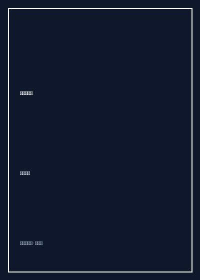

自然与人生

8.2
★★★★☆
豆瓣评分 · 4,320 人评价
日本明治自然文学巅峰之作，以画师般的精密笔触捕捉湘南山海的晨昏风月与天地微茫，透视微尘与万物的生命真境。
总体观点
德富芦花的《自然与人生》是近代东亚自然写生文学的绝美典范。作者摒弃了当时日本文坛充斥的喧嚣功利与矫饰风潮，隐居湘南海岸与富士山麓，将画家敏感锐利的视觉感知与文学家幽微纤细的文字肌理熔铸一炉，对海风、浮云、落照、残雪及鸣虫展开了物我两忘的微距透视。
全书不仅是一部惊心动魄的大自然光影画卷，更寄托了作者对明治维新近代化狂飙中人性异化与世事喧嚣的深沉反拨。在日出日落、潮汐涨落与草木枯荣的永恒循环中，芦花体悟到生命不过是浩瀚造化的一瞬投影，唯有常怀敬畏与慈悲，才能在虚无中守护灵性的澄澈与内心的坚韧。
核心观点
-
1. 画师之眼与微光浮影的精密速写
芦花观察自然如同一位随身携带调色盘的印象派画家，能够捕捉到朝阳暮霭中光线每隔数秒所发生的精妙折射与色彩嬗变。
在记叙相模滩日落时，他以极富层次的语汇描写海水由蔚蓝化作暗紫、金霞熔金、再到晚星初升的细微变化，使文字焕发出水彩画般的流动质感。 -
2. 物我一体与天地造化的深沉契合
人并非凌驾于万物之上的征服者，而是大自然呼吸律动中的微小细胞，通过全神倾听即可与草木虫鱼同频共振。
夜宿海边茅屋听惊涛拍岸，作者将自己的心跳融入层层涌起的白色碎浪，感知到肉身与沧海原是同一母体所孕育的灵性碎片。 -
3. 富士山的千万气象与永恒不动之美
富士山在芦花笔下摆脱了单一的明信片式符号，成为承载风霜雨雪变幻、阅尽人间兴衰的庄严精神地标。
无论晴空万里下的积雪银峰，还是暴风雨中隐藏在墨云雷电深处的巍峨黑影，富士山的岿然不动反衬出人世得失的轻如鸿毛。 -
4. 落叶与衰朽中的生命圆融律动
芦花不避讳秋冬的萧瑟与草木凋零，反而在枯叶纷落、严霜冻土的静谧中洞见生命积蓄力量与回归母体的崇高。
散步于枯寂的落叶松林，踩踏松针发出清脆声响，作者感叹落叶绝非生命的终局，而是大地母亲为来年萌发的新绿所铺陈的温柔温床。 -
5. 对近代文明喧嚣的诗意逃逸与反思
在明治近代化工业狂飙推进、人欲膨胀的时代，作者退守田园海角，以质朴的自然沉思抵抗机械社会的精神贫瘠。
面对东京都市中熙熙攘攘争权夺利的名利客，芦花安然在陋室中煮一壶清茶听檐下雨滴，展示了一种回归朴素存在本质的从容境界。
全书结构
-
第一篇 写生帖：自然与人生
收录对日光、云影、海涛、落雪等纯粹自然现象的极度写意与速写，展现大化流行的壮阔气象。
描绘破晓前东方天际由灰白转为鸭蛋青、再跃出万道金光的日出奇观，呈现大自然每日上演的宏大创世纪。 -
第二篇 湘南杂笔
记录旅居相模湾、逗子海岸期间的行吟见闻，以风土民俗与海滨四季更迭织就抒情画卷。
记录渔村出海捕鱼的晨景、海潮退去后沙滩上的贝壳光泽，以及老渔民满面沧桑却平和纯朴的微笑。 -
第三篇 富士山之姿
多角度、跨季节凝视富士圣山，从远处遥望到近处攀登，探讨永恒神圣在多变尘世中的寄托。
从火车车窗、山巅隘口乃至海中行舟各个机位远眺富士，捕捉晨曦初照与夕阳残照时圣山的庄严神韵。 -
第四篇 杂感与沉思
由自然景物转入对人世伦理、艺术创造、生死去留等形而上哲思的内省性漫笔。
通过一朵野蔷薇在风中摇曳飘落的过程，引发对青年时代热望、中年幻灭与生命超然释怀的深度叩问。 -
第五篇 灰烬与余响
晚秋初冬的沉思篇章，以壁炉薪炭的微温凝视岁月流逝，总结人生在造化面前的谦卑与安顿。
凝视炭盆中渐渐化为白灰的红火，体悟万物由绚烂归于平淡的必由之途，获得精神的恒久释怀与宁静。